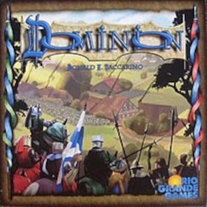

"Slay The Spire" jest to gra o gatunku "Roguelike Deckbuilder". Możemy rozłożyć to na części:
Roguelike
Nazwa odnosi się do gier podobnych do "Rogue", która wyróżniała się przypadkowo generowanymi poziomami oraz permanentą śmiercią bohatera zmuszająca gracza do rozpoczęcia gry od zera.

Deckbuilder
Gatunek ten dotyczy gier zawierających karty, w których gracz buduje własną talię poprzez zdoybywanie nowych lub modyfikowanie starych kart.
Pierwszą taką grą było "Dominion" i miała ona znaczny wpływ na gry, które po niej nastąpiły.

"Slay The Spire" jest jedną z pierwszych gier tego gatunku, lącząc cechy obu (przypadkowo generowane poziomy, tworzenie własnej talii, itd.)